Campanha em Andamento: Ajude-nos a plantar mais 1.000 árvores neste mês!
Participar
Desde 2022, atuamos para fortalecer a conexão entre as pessoas e a natureza, promovendo o equilíbrio completo dos ecossistemas.
Nossos projetos estão alinhados com quatro pilares essenciais:
- Educação Ambiental Promovendo consciência e ação
- Apoio a Comunidades Fortalecendo laços locais
- Proteção da Vida Selvagem Preservando a biodiversidade
- Práticas Sustentáveis Construindo um futuro melhor
Juntos, já conquistamos:
Meio Ambiente

+ 5.000
Árvores plantadas
Proteção Animal
+ 300
Animais resgatados
Impacto Social
20
Comunidades apoiadas
Voluntariado
+ 800
Voluntários ativos